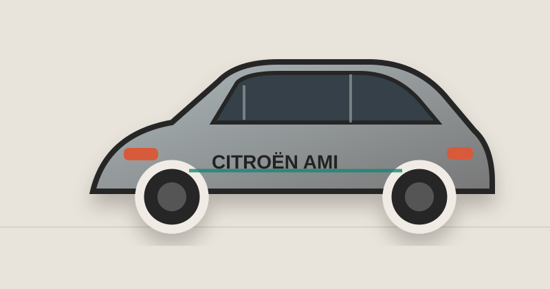
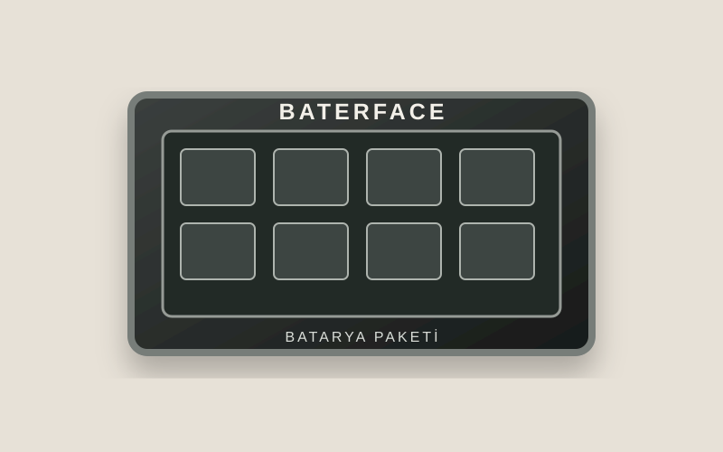

ELEKTRİKLİ ARAÇ · BATARYA · TEKNOLOJİElektrikli araçlar
Elektrikli araçlar
için doğru çözümler.
BaterFace, elektrikli araçların batarya ve menzil ihtiyaçlarına özel çözümler geliştirir.
⚡Daha Fazla
Menzil◉Güvenilir
Teknoloji⚙Özel
Entegrasyon
Menzil◉Güvenilir
Teknoloji⚙Özel
Entegrasyon

Öne Çıkan Projeler
Tüm Projeleri Gör →Projeler
Farklı araçlar, farklı ihtiyaçlar. Gerçek çözümler.

BATERFACE
BATARYA
BATARYA
Çözüm Talebi
Aracınız için en uygun çözümü birlikte belirleyelim.
Bilgileri doldurun, sizinle WhatsApp üzerinden iletişime geçelim.
1Araç Seçimi
2Proje Türü
3Detaylar
AMI
Hakkımızda
BaterFace, elektrikli araçlar için özel batarya çözümleri geliştiren bir ekibin markasıdır. Farklı araçlara, farklı ihtiyaçlara uygun, güvenilir ve uzun ömürlü çözümler üzerinde çalışıyoruz.
▣ UzmanlıkElektrikli araç ve batarya teknolojileri
♢ Özel ÇözümlerHer araç için ihtiyaca uygun tasarım
◉ GüvenilirlikStandartlara uygun, güvenli uygulamalar
⌁ Teknik DestekProje sonrası da yanınızdayız
BATERFACE
İletişim
Sorularınız, projeleriniz veya iş birlikleri için bize ulaşabilirsiniz.
BATER
FACE
FACE